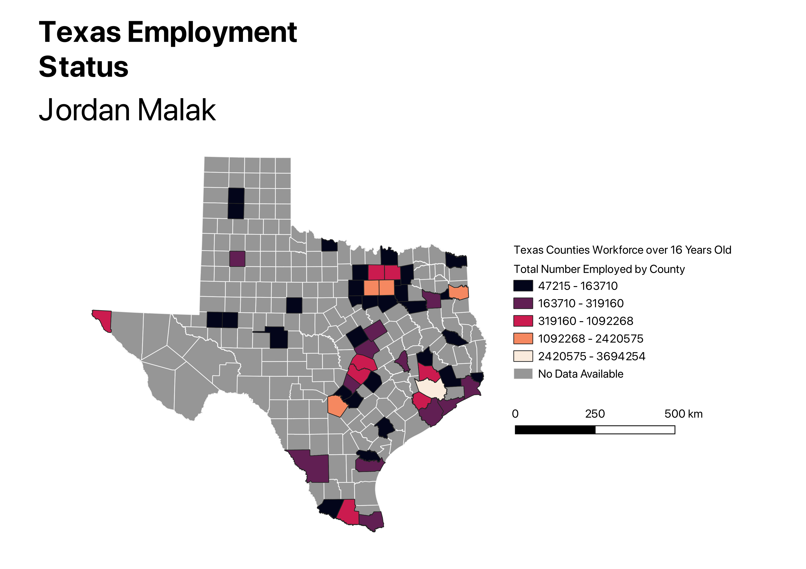

Homework 6: Census Choropleth
The following map visualizes employment for residents over the age of 16 for Texas counties. The choropleth map increases from a black to tan colorscheme, depending on the total number in a county's working force. A common occurrence is a high clustering around large urban areas: Houston, Dallas, and San Antonio [With smaller workforce numbers in surrounding areas].

Links to CSV and Vector files
GitHub CSV
GitHub Vector